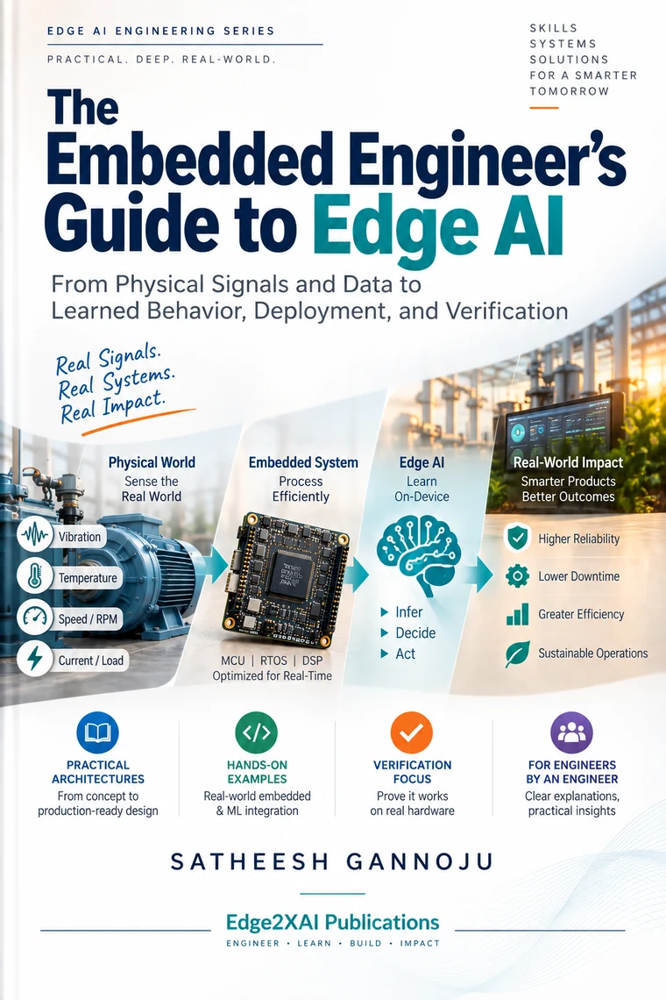
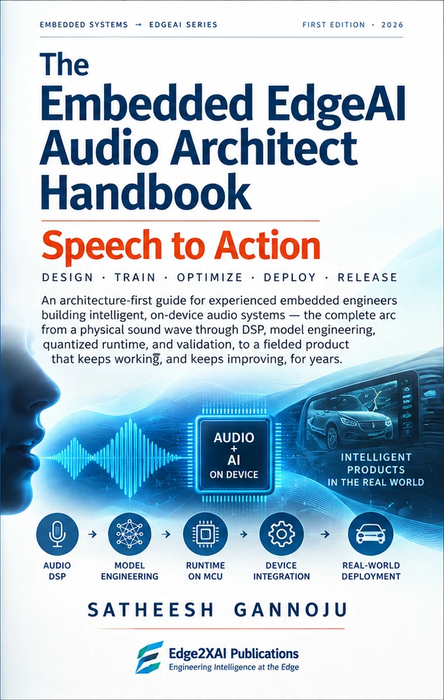

Knowledge & Publications
From Fundamentals to Real-World EdgeAI.
Practical books and resources to build strong foundations in Embedded Systems, DSP, and EdgeAI — and apply them in real-world systems.
Practical
and Applied
and Applied
Systems
Perspective
Perspective
From Concepts
to Implementation
to Implementation


The Edge2XAI learning model
Read it. Understand it. Build it. Debug it. Reuse the architecture.
Edge2XAI Knowledge is being developed as more than a bookshelf. Each major topic starts with deep written material and can grow into structured learning, hands-on implementation, debugging knowledge, and guided technical development.
Publications
Three books in 2026, backed by ready-to-use code.
The Audio Architect Handbook goes deep into one continuous audio architecture and publishes first. The Guide to Edge AI builds breadth across the complete lifecycle. A third title, chosen from the roadmap below, completes the year — and the code behind them is being turned into ready-to-use Git projects.
- Book 1 · Publishing firstAudio Architect HandbookDepth · 32 chapters
- Book 2 · 2026Guide to Edge AIBreadth · full lifecycle
- Book 3 · 2026To be announcedChosen from the roadmap
- Then & alongsideReady-to-use Git projectsProven, reusable code for every book
In development · Publishing first
Depth
The Embedded EdgeAI Audio Architect Handbook
Speech to Action
A deep architecture and implementation journey through one complete embedded audio intelligence system — capture, DSP, streaming features, quantized inference, runtime, validation, and lifecycle.
32 chapters
6 parts
One continuous reference system
Audio EdgeAI architecture
Second in the series · Publishing 2026
Breadth
The Embedded Engineer's Guide to Edge AI
From physical signal to deployment and field verification
A broad transition guide for experienced embedded engineers who need to understand how familiar systems thinking maps into the complete EdgeAI product lifecycle.
Product framing
Data & signal pipelines
Deployment & runtime
Field verification & evolution
Publication Roadmap
Topics and working titles under consideration.
The roadmap is intentionally not fixed. These are areas Edge2XAI is considering for future books and learning packages as the knowledge platform grows.
Debugging & Reliability
Debugging Edge AI on Microcontrollers
Diagnosing failures across data, DSP, quantization, memory, inference runtime, and real-time embedded behavior.
Hands-On TinyML
TinyML with ESP32-S3
A practical path through data, models, quantization, runtime integration, and embedded deployment using ESP32-S3 as the hands-on platform.
Embedded ML Runtime
TensorFlow Lite Micro for Embedded Engineers
TFLM from a firmware engineer's perspective: model integration, tensor arenas, operators, quantization, memory, instrumentation, and debugging.
Domain Architecture
Automotive EdgeAI Architecture
Exploring how embedded, real-time, sensor, and AI architectures come together in automotive edge systems.
Help shape the roadmap
What practical Embedded Systems or EdgeAI resource would help you most?
The best next topic may be one already on this roadmap — or a problem we have not listed. Feedback can help shape future books, video courses, hands-on labs, Git projects, and training.
Suggest a TopicBeyond the Book
A Broader Learning Journey
Books are one part of the journey. Explore courses, hands-on labs, Git projects, and mentorship to go deeper and build real-world capability.
Explore the Learning Platform →Publications
Video Tutorials
Labs
Reference Designs
& Guidance
Architecture that transfers
One reference implementation. Reusable engineering patterns.
The hands-on implementation will demonstrate one concrete embedded platform, but the learning is not intended to be tied to one board. The architecture and engineering methods are designed to transfer across MCU/SoC targets, microphones and codecs, RTOS environments, ML runtimes, and audio EdgeAI applications.
Audio Capture→
DMA / Buffering→
DSP / Features→
Quantized Inference→
Policy / Intent→
Product Behavior
Keyword Spotting
Voice Command / Control
Automotive Cabin Audio
Acoustic Event Detection
Machine Monitoring
Predictive Maintenance
Engineering Knowledge Base
Reusable knowledge beyond the books.
These assets are being developed alongside the publications so that implementation lessons, architecture decisions, and debugging knowledge remain reusable rather than disappearing inside one project.
Architecture Notes
Concise system concepts connecting DSP, ML, runtime, memory, latency, and product behavior.
Debugging & RCA
Observed failures, root-cause analysis, instrumentation, fixes, and reusable engineering lessons.
Architect Q&A
Review and interview-style questions for retention, mentoring, and architecture discussions.
Reference Architectures
Reusable patterns for acquisition, streaming DSP, quantized inference, validation, and lifecycle.
Growing in sequence
From self-study to guided learning.
Today, 1:1 guidance is available by request, customized to your project and background. As the books, proven Git projects, and courses mature, group training and workshops can follow for engineers who want a more guided path through Embedded EdgeAI.
1:1 Guidance · By request
Group Training · After courses
Project-Guided Mentorship · By request